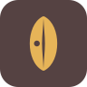
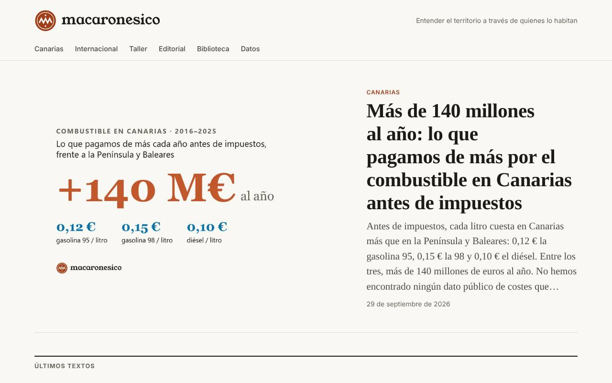
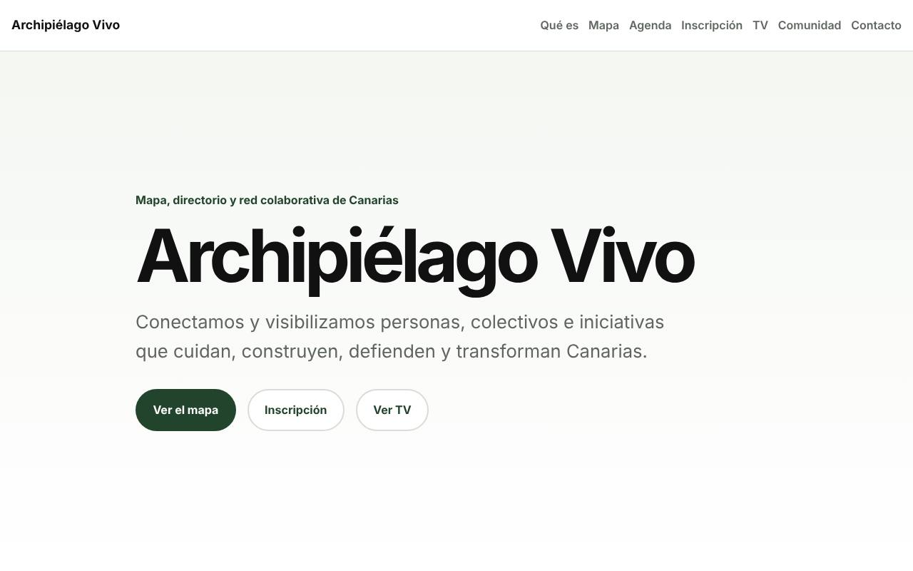
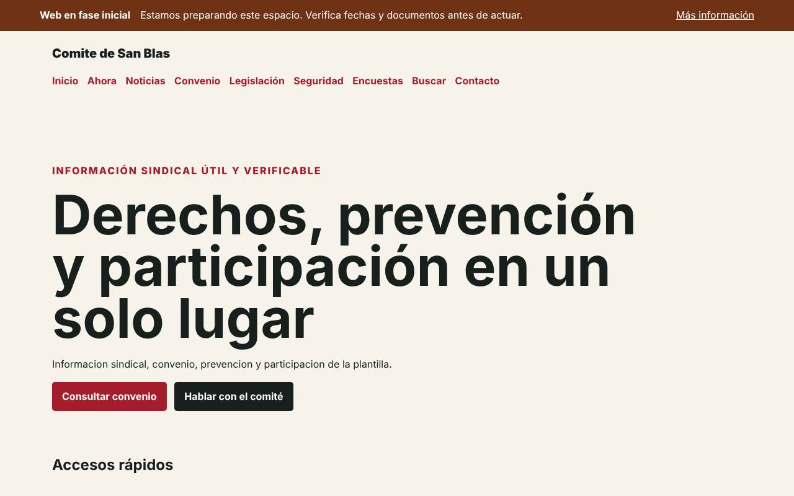
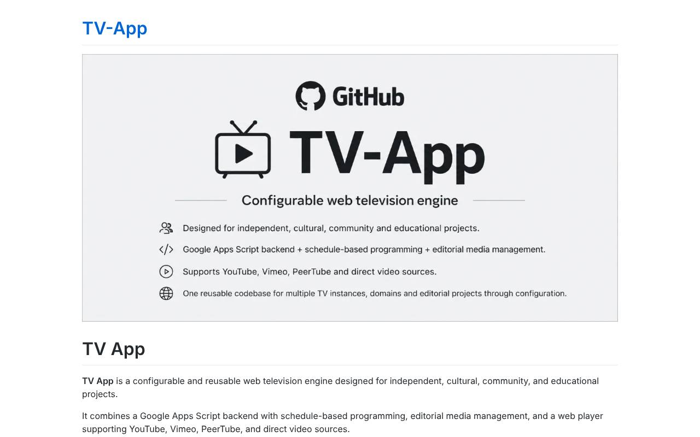
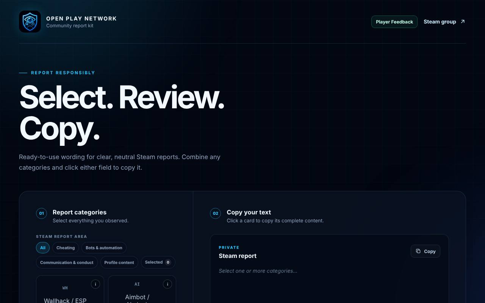

Cliente · Salud
Clínica Dental Dharma
Web para una clínica de odontología holística en Santa Cruz de Tenerife, pensada para que los pacientes pidan cita fácilmente.
Ver proyecto
Webs para clientes, plataformas culturales y herramientas abiertas diseñadas y desarrolladas por Gofio Design.
Web para una clínica de odontología holística en Santa Cruz de Tenerife, pensada para que los pacientes pidan cita fácilmente.
Ver proyecto
Web de terapia regresiva presencial en Tenerife, con artículos, preguntas frecuentes y contacto directo por WhatsApp.
Ver proyecto
Catálogo Atlántico de Núnea Arqueología: un museo sin edificio del arte y la cultura de Canarias, construido entre todos.
Ver proyecto
Laboratorio abierto sobre Canarias y la Macaronesia: análisis, opinión y datos para entender el territorio a través de quienes lo habitan.
Ver proyecto
Mapa, agenda y red colaborativa que conecta personas, colectivos e iniciativas que cuidan y transforman Canarias.
Ver proyecto
Sistema web estático, federable y configurable para comités y secciones sindicales: convenio, prevención y participación.
Ver proyecto
Motor de televisión web configurable con programación por horarios y reproducción de YouTube, Vimeo y PeerTube.
Ver proyecto
Kit de plantillas para redactar reportes claros y neutrales en la comunidad de Steam: seleccionar, revisar y copiar.
Ver proyectoProyecto propio en fase de idea. Muy pronto, más detalles.
PróximamenteAplicación web para el control de la jornada laboral: registro sencillo de entradas, salidas y horas trabajadas.
Próximamente